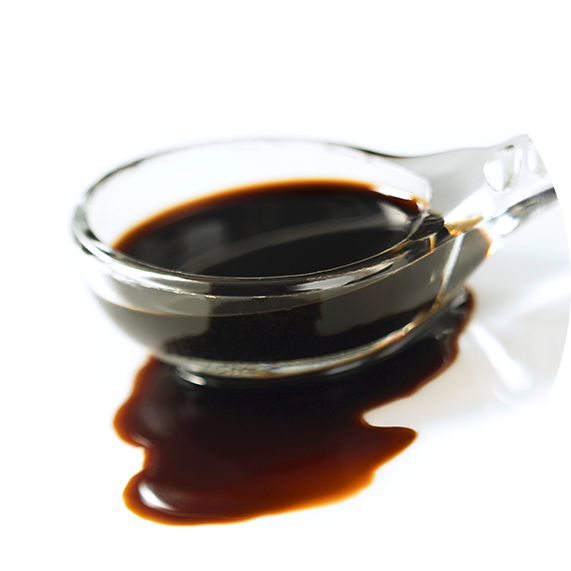

Bio Fuel Oil
Conventional Bunker-C refers to eco-friendly fuels mixed and manufactured with cashew nut oil, palm oil and other copper and vegetable oils as alternative fuels. Following the implementation of the RPS system for renewable energy in 2012, Bio fuel oil was defined as renewable energy in order to promote introduction of generation companies, and in January, 2014, the Ministry of Industry and Commerce announced the promotion of dissemination

| Items | Specification | Items | Specification |
|---|---|---|---|
| Flash point | Min 70 | Kinematic viscosity at 50℃ | 15~80 |
| Micro carbon reisdue | Max 10 | Sulfur | MAX 0.05 |
| Ash | Max 0.10 | Copper strip corrosion at 50℃ for 3h |
MAX 1 |
| Pour point | Max 27 | Density at 15℃ | MAX 991 |
| Water | Max 0.3 | Total Acid Number | MAX 25 |
| NA | Max 70 | Ca | MAX 30 |
| K | Max 70 | Iodine value | MAX 120 |
| Nitrogen | MAX 0.3 | V | MAX 50 |
| Gross Calorific value | Min 9,000 | Water and sediment | MAX 0.5 |
| Si+Al+Fe | MAX 200 | P | MAX 100 |